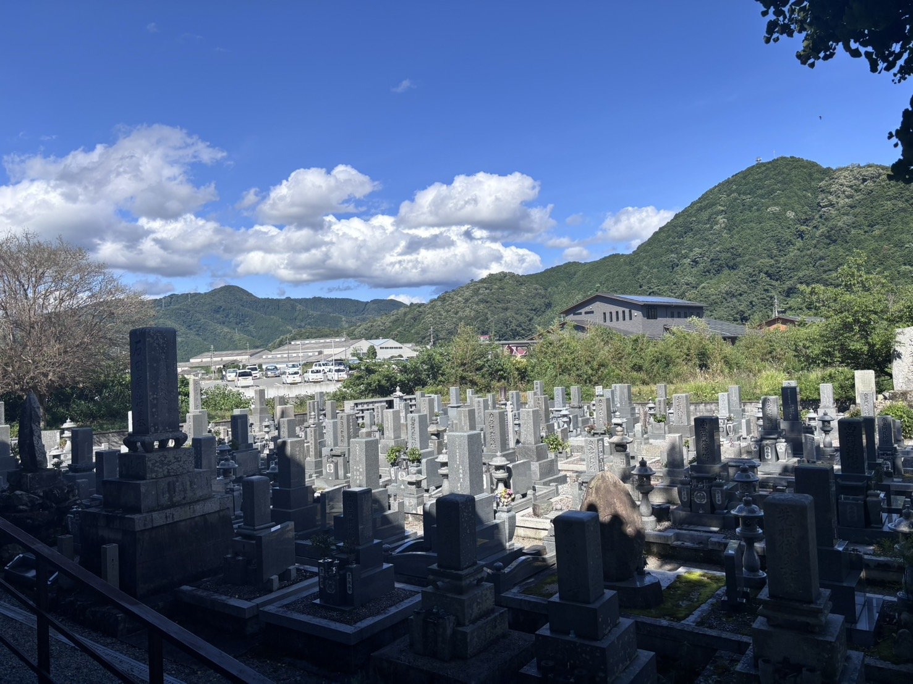
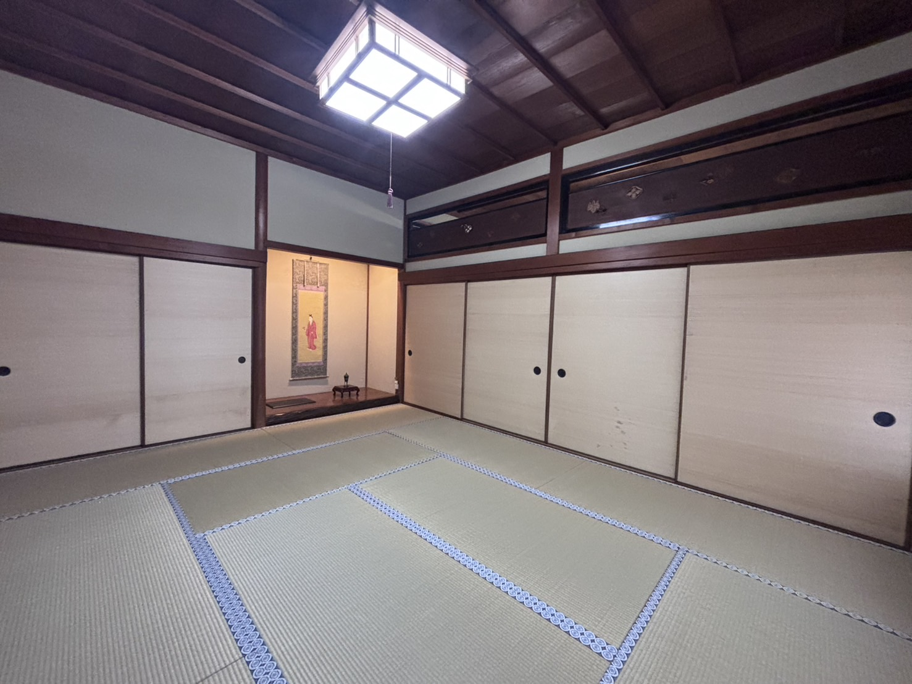
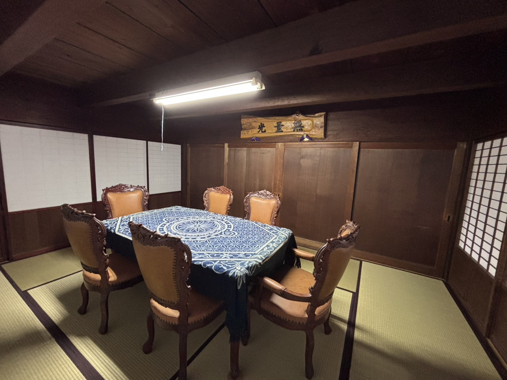

浄土真宗本願寺派
攝刕山
西光寺
SAIKOJI
ホーム
ご挨拶
西光寺について
アクセス
お問い合わせ
施設案内｜西光寺
施設案内
Facilities Information
境内全景
山門
参拝にあたり皆様をお迎えするお寺の門です。 赤松類族廣瀬・宇野家の家紋、村上天皇の御紋が彫られています。
本堂
ご本尊である阿弥陀如来を安置するお堂です。 また、浄土真宗の本堂は聞法道場でありお聴聞する場です。
大玄関
来賓をお出迎えするための玄関です。 大きな法要などで正式な受付として使われます。
玄関/寺務所/帳場
来客受付です。日常の来客対応や事務を行います。 報恩講や別修永代経法要では帳場になります。
茶所倶会
気軽に利用できる休憩所です。 バリアフリーのため土足でのご利用になります。お仏壇が安置されています。
茶所1階
多目的室です。お花の稽古・会議・勉強会・食事を行います。 小規模の法要を行うことが可能です。
茶所2階
図書室です。仏教書や辞書などがあります。ごゆっくりお使いください。 後世に残したいという本などのご寄付も受け付けてます。
炊事場
法要・行事などで仏飯や御斎など炊事を行う場所です。
お手洗い
男性・女性・身障者のお手洗いがあります。 体調不良などの時用の警報器も設置してます。
鐘撞き堂
法要前の合図、除夜の鐘の時にならします。
手水車
手などをすすぐための場所です。 水の流れる音は気持ちを落ち着かせます。

墓地
西光寺境内にある墓地です。年に二回墓地満燈会を行なっています。
一の間
座敷の中で一番格の高い部屋。 床間（上座）には宗祖の御影が掛けられています。

二の間
座敷の中で二番目に格の高い部屋。 床間があります。

三の間
座敷の中で三番目の部屋。 床間もなく利用勝手の良い部屋です。
西座敷
一の間と同等の格の部屋。 僧侶（法中）の控室になることが多いです。
仏間
御内仏が安置される部屋。 本堂がお寺・御門徒の大元の仏壇ですが、庫裏の寺族の仏壇を御内仏といいます。 仏間に隣接する、三の間・茶の間・帳場の襖を外し４０畳の部屋として利用できます。
客殿
御講師などの御客僧を接待、宿泊なされる部屋です。 和室・寝室・トイレ・浴室・キッチンが備え付けられています。
中庭
本堂側・庫裏側と二つの大きな中庭があります。 四季折々の花や景色が堪能できます。カエルや鈴虫や蝉や鶯、夏には梟が鳴いています。
駐車場
西光寺の南の塀沿いに砂・砂利・芝生の駐車場があります。 西光寺に参拝される方の駐車場です。他の目的で利用される場合は一言おかけください。 なお、駐車場内での事故盗難などは保証できません。